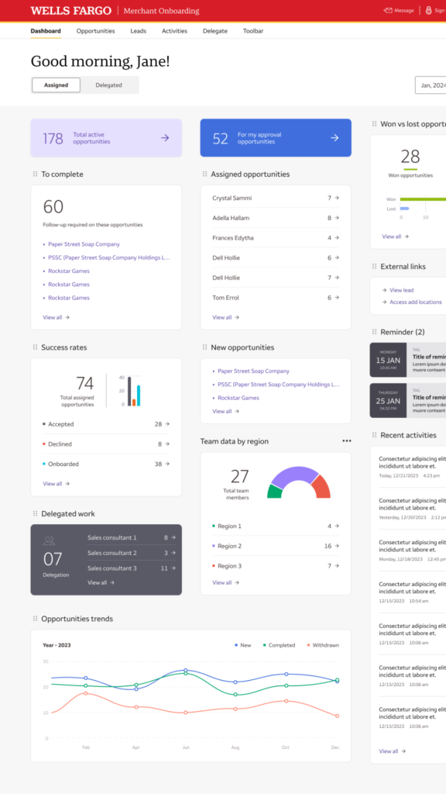
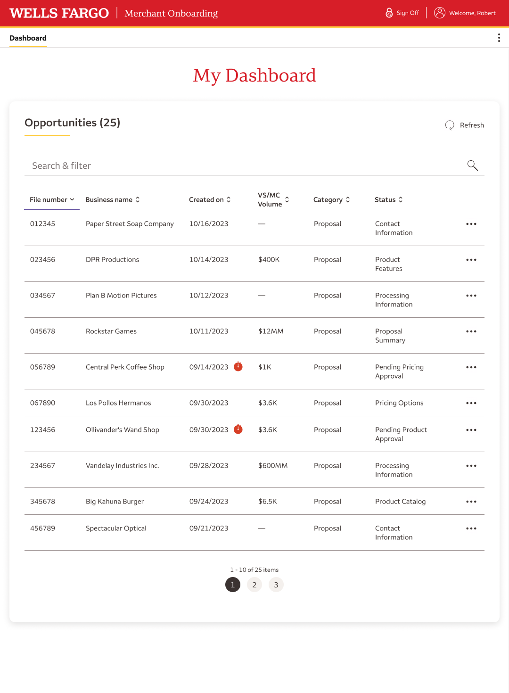
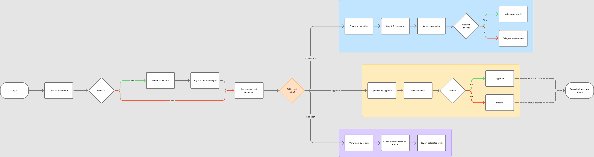
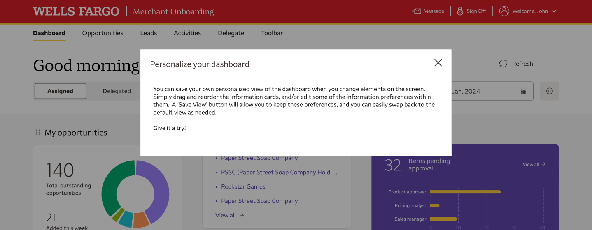
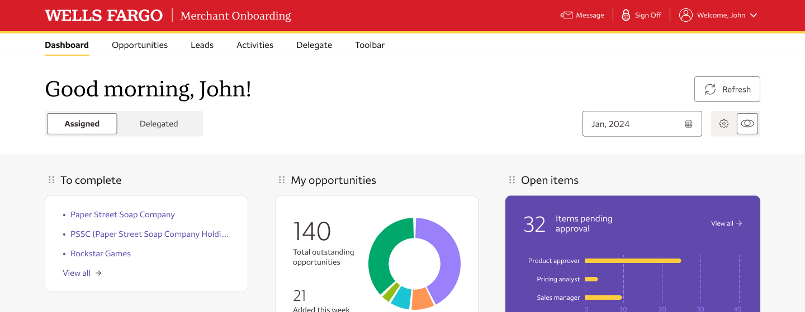
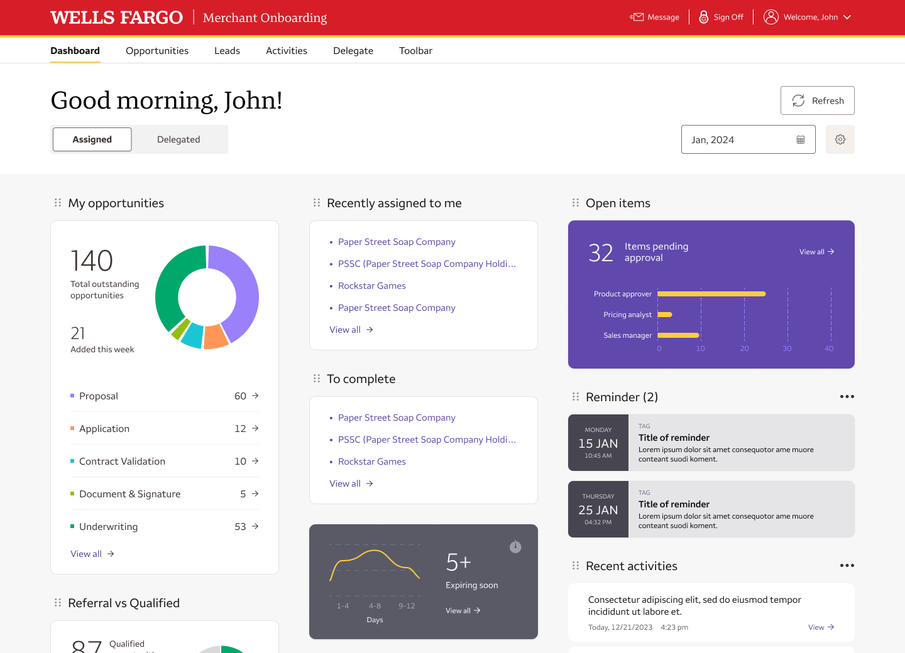
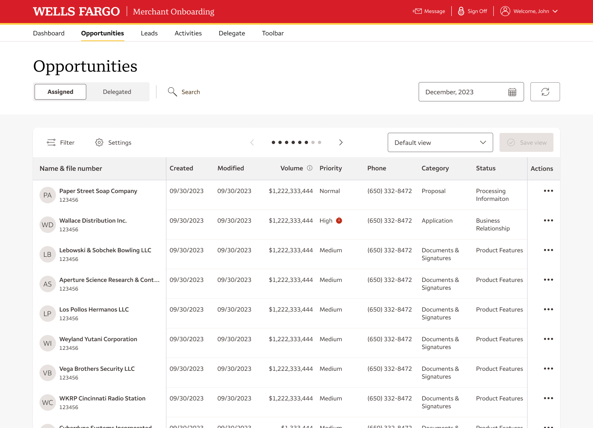
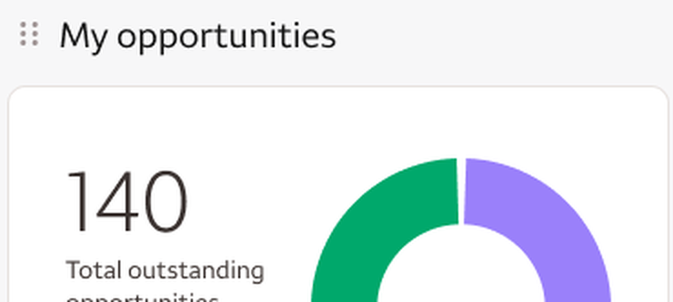

Concept to executive demo in 6 weeks
Designing a personalized, responsive dashboard that helps merchant onboarding teams see their work, their wins, and their team at a glance.
- Role
- Design Lead
- Timeline
- 6 weeks
- Focus
- Dashboard &
design system

Marylynne Berei · Senior Lead Product Designer · Visuals recreated to protect confidential information
A team of seven, four user roles, one leadership demo
Who it was for
The team
My role
- Led the team end to end on a 6 week schedule
- Wrote the product brief and set direction
- Built the full process in Confluence and Kanban so everyone could see it
- Added a custom feedback macro to our MOS-TEAM-DASH Confluence site, so users and partners could weigh in anytime, with no extra meetings and no Figma training
- Ran weekly user feedback sessions with 2 day turnarounds
- Organized reviews, check ins, and schedules across all partners
Everything was there. Nothing was at a glance.

1 2 3 4- 1A wall of text
Consultants scanned rows of plain data to work out what needed them next.
- 2No control
Sort one column at a time. No way to shape a view around how they actually worked.
- 3Status gaps slipped by
Pending approvals and urgent follow-ups were easy to miss in all the scrolling.
- 4Broke on smaller screens
On tablets and small laptops, the right-hand columns were cut off, forcing a horizontal scroll.
Consultants wanted their work at a glance, on their terms.
Two core roles, one shared need: control
I want a landing page tailored to my role, that I can rearrange and make my own.
- Personalize the dashboard around how I work
- See more detail on my work items in the table
- Save my own custom views
I want my dashboard to show what matters to my role, not a consultant’s view.
- See information specific to managing a team
- Search, filter, and assign work from one table
- Save my own custom views
Build on what we had, or buy another platform?
Our demo had a second job: show Business Transformation leadership whether a custom dashboard could live in our own platform, moving from Angular to React, or whether we needed to invest in Salesforce.
Build in our own platform
- Rebuilt from Angular to React, ready for responsive
- One platform, one consistent experience for users
- Uses the engineering team already in place
- No new third-party tool to buy
- Opens the door to a fully responsive Onboarding experience
Add Salesforce
- Another tool to buy and maintain
- Two platforms stitched together
- More friction and mixed visual cues for users
- Leaves the rest of Onboarding non-responsive
Six weeks, two holidays, and every checkpoint cleared
Before any pixels: people, access, and expectations
Rallied the team
- Product Designer, Content Strategist, and Prototyper signed on
- Not just willing, genuinely enthusiastic about the work
Took the friction out of Figma
- A dedicated Figma space for the design team
- A public view of in-flight screens, so sales never needed Figma training
- Linked straight into Confluence with a macro
Kicked off with every partner
- Product, Engineering, Business Analysis, Content, and Design together from day one
- Set expectations and the timeline
- Made sure everyone knew who we were and what each role owned
Grouped users by people, not titles
- Many users wore more than one hat: a Product Approver could also be a Sales Consultant
- One group spanning every role gave us the full picture in each review
Week one set up everything that followed.
One home for the work, open to everyone
- Project home
- Product brief
- Schedule & milestones
- Prototypes
- Feedback rounds
- Decisions log
- Engineering feasibility
- Meeting notes
Merchant Dashboard, Round 2 review
To do
In progress
In review
Done
Views recreated with fictional content to protect confidential information
Test early, test often, turn it around in two days
Post in-flight screens
Public Figma view, linked into MOS-TEAM-DASH
Formal user session
Weekly, with consultants, approvers, and managers
Feedback on their time
The Confluence macro saved input between sessions
2 day turnaround
Design changes back in front of users fast
Feasibility check
Dev partners built each increment in React
One dashboard for every hat our users wore

Click to enlargeGive users full control of their dashboard
Full user control, plus the ability to bounce between roles
- Many users wore more than one hat, so one fixed layout couldn't fit everyone
- Consultants needed a landing page they could make their own
- A short tip on first visit explains how it works
- Save View only appears once something changes
- The default layout is always one click away


Stack, don’t scroll
Move the experience to React, responsive page by page
- Breakpoints built around tablet, the size that broke the old dashboard
- On smaller screens, cards simply stack
- Nothing else changes, so the layout stays familiar
- Set up the whole Onboarding experience to go responsive, not just one page
Before: on tablets and small laptops the table ran off the right edge, forcing a horizontal scroll. After: the same content, stacked to fit.
From a wall of text to work at a glance

1 2 3
4The prototype, from dashboard to filtered table
Jump to
Built from the Figma prototype screens. Visuals use fictional data.
Proven parts, accessible from day one
Wells Fargo Design System
Enterprise color, type, and accessibility standards underneath everything.
Merchant Services Design System
Existing onboarding cards, tables, modals, and filters. No new components needed.
Highcharts
Charts reviewed with our accessibility partners and confirmed to meet Wells Fargo standards.

The “candy box” handle
A small grip on every card signals it can be dragged and reordered.
- Consistent with the rest of Onboarding
- Accessibility built in, not bolted on
- Nothing new for engineering to build from scratch
From concept to a funded build
from kickoff to a live executive demo
with a dedicated scrum team assigned
about 12 weeks, estimated for the full build
new components and no new platform to buy
- Engineering was already building it on their own in the test environment
- Business Transformation leadership asked to move it forward
- Proved we could build in React instead of buying Salesforce
What I’d keep, and what I’d do differently
Speed came from setting up the people and the process first.
Questions?
Marylynne Berei · Senior Lead Product Designer